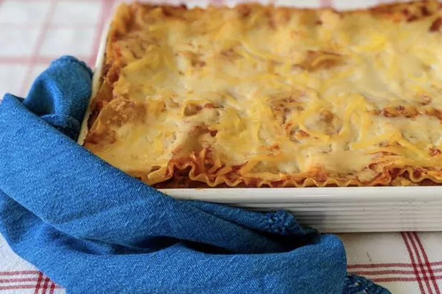

Lasagna Recipe

Description
This is my mom's special homemade lasagna recipe with a meaty, made-from-scratch tomato sauce and a deliciously cheesy filling.
A more traditional homemade lasagna filling would be made with ricotta but my mom's recipe calls for a blend of small-curd cottage
cheese and Parmesan. I have found none better anywhere. Serve with a leafy green salad and crusty garlic bread.
Ingredients
- Meat:This lasagna recipe starts with a pound of ground meat (½ pound ground pork, ½ pound lean ground beef).
- Onion:A diced onion is cooked until translucent with the ground meat.
- Canned tomatoes:You'll need a can of tomato sauce and a can of crushed tomatoes.
- Fresh herbs:For fresh flavor, chop two tablespoons of parsley and crush one clove of garlic.
How to cook
- Cook the meat
- Cook the noodles
- Make the cheese layer
- Assemble the lasagna
- Bake the lasagna